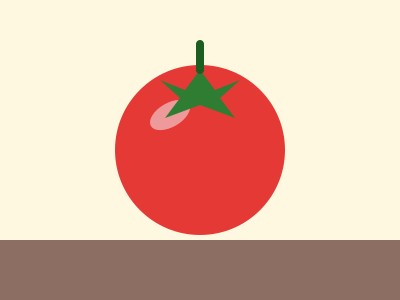

La tomate est le légume-fruit préféré du potager. Elle aime la chaleur, le soleil et un sol riche en matière organique.
Caractéristiques
- Famille : Solanacées
- Semis : en pépinière, 6 à 8 semaines avant le repiquage
- Exposition : plein soleil
- Arrosage : régulier, au pied, sans mouiller les feuilles
- Récolte : 70 à 90 jours après le repiquage
Nombre de caractéristiques : à calculer.
Conseil : supprimez régulièrement les gourmands (les petites
pousses entre la tige et les branches) pour que les fruits grossissent mieux.